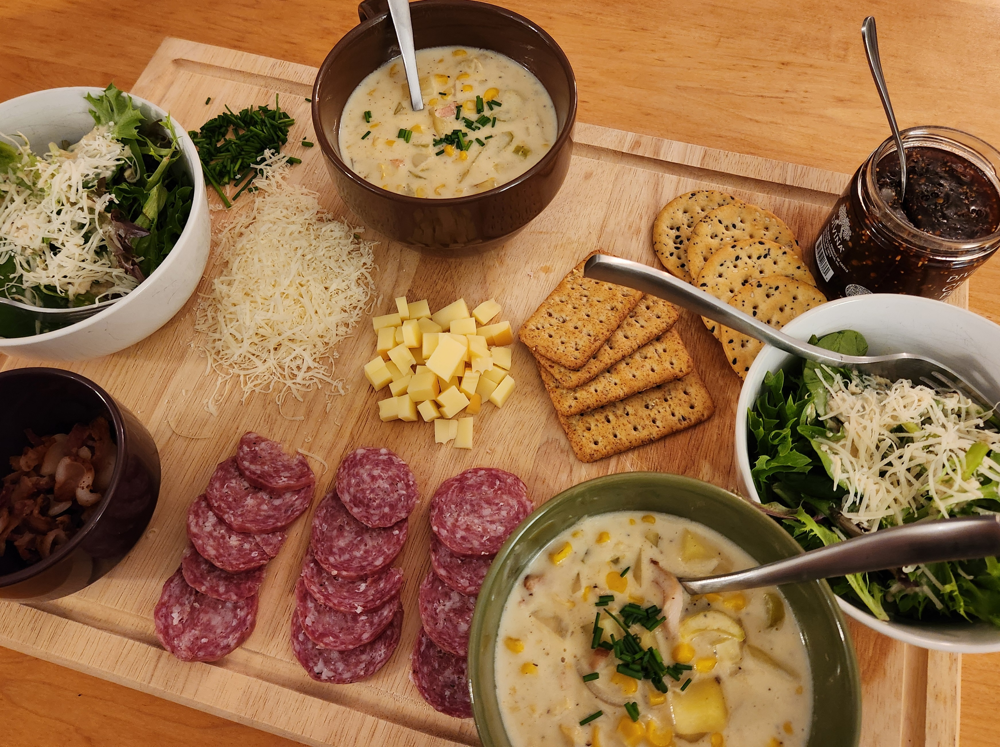

Lovers’ Digest
Marry Me Chicken
Did Daniel cook a dish with “marry me” in the name on the first date? Yes, indeed he did.

Chicken Piccata
The first Phillips dinner supplied by Chef de Cuisine Daniel Duke.

Beef Rogan Josh
The first Indian dish, which was heartily endorsed by Komal.

Corn Chowder
The first soup that stole Laura’s heart.
Roasted Tomato Quiche
One of four quiches prepared in a single night.

Cinnamon Biscuits
Even though these look so delicious, Laura still prefers the good ol’ flully plain ones.

Baked Salmon
Unexpedtedly delicious. Served with hot honey cauliflower, roated potatoes, and (not pictured) homemade Ceasar salad.